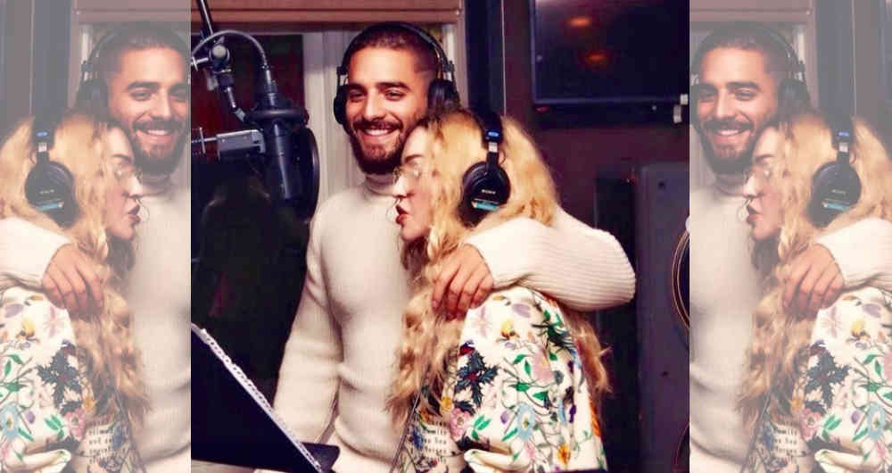
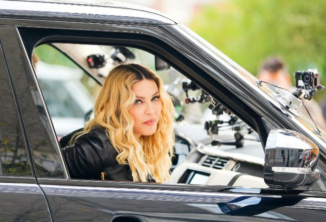
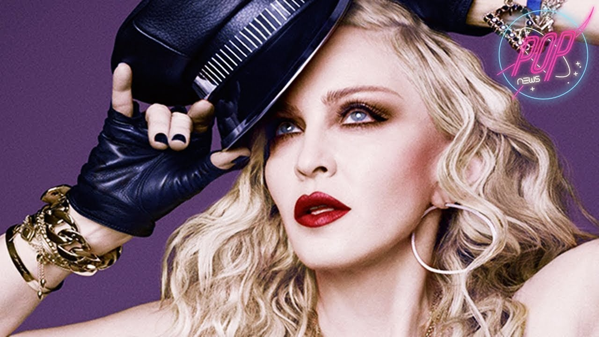
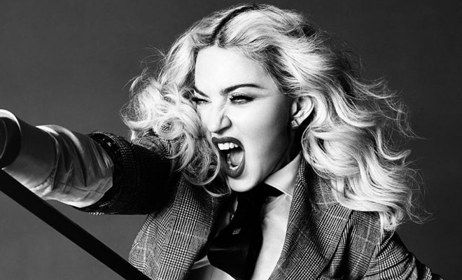

Noticias
- Maluma y Madonna: ¿Te gustó "Medellín? Esto opinan los críticos del dueto
El reggaetonero colombiano fue convocado por la 'Reina del pop' para su nuevo disco. El resultado ha dividido a sus seguidores. Esto dice la crítica musical
Maluma fue convocado por Madonna para su nuevo disco. "Medellín" es el nombre del tema que han grabado juntos y que es, además, el primer sencillo de dicho álbum.
De momento, en YouTube el audio oficial de la canción ya divide opiniones: 4 millones de reproducciones, más de 100 mil likes y 47 mil 'dislikes'.
La crítica especializada también ha estado atenta al lanzamiento. A continuación citamos algunos de los principales comentarios.
- ¿Se marcha Madonna de Lisboa?
La prensa portuguesa lo da por hecho
La reina del pop, de 60 años, va a dejar el Palácio de Ramalhete en marzo y, tras pasar sus últimos meses en la capital portuguesa en un hotel de lujo, abandonará el país en septiembre para regresar a Estados Unidos, insisten diarios y revistas que, ante la ausencia de cualquier tipo de confirmación, citan siempre la fuente original.
- Madonna ya tiene fecha para su nuevo disco
Madonna, que ha estrenado este miércoles el single bilingüe Medellín junto al colombiano Maluma, anunció en un comunicado que su próximo disco, titulado Madame X, se publicará el próximo 14 de junio. Su nuevo álbum, concebido durante su residencia en Portugal, será el decimocuarto disco de estudio de su carrera y llegará cuatro años después de la publicación de Rebel Heart.
“Lisboa es donde ha surgido mi disco. He encontrado a mi tribu allí y un mundo mágico de increíbles músicos que han reforzado mi creencia de que la música está conectada en todo el mundo y es el verdadero alma del universo”, apuntó la estrella del pop.
- Madonna, única mujer en la cima de las listas de éxitos británicas
Reino Unido cuenta con uno de los mercados musicales
más importantes del planeta, su lista de éxitos es un referente a nivel mundial. Si nos centramos en el apartado femenino, únicamente una mujer consigue estar en la cima. Madonna se encuentra prácticamente sola (rodeada de hombres) entre los primeros puestos de artistas que más veces han logrado el número uno en la lista de sencillos, convirtiéndose en la mujer más exitosa de las islas británicas.